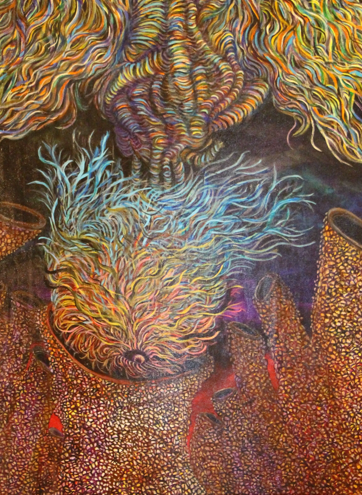
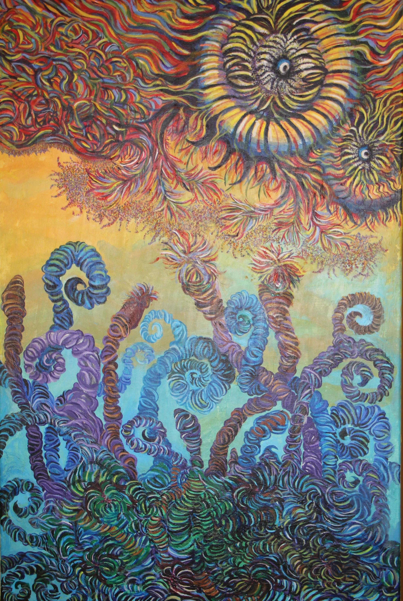
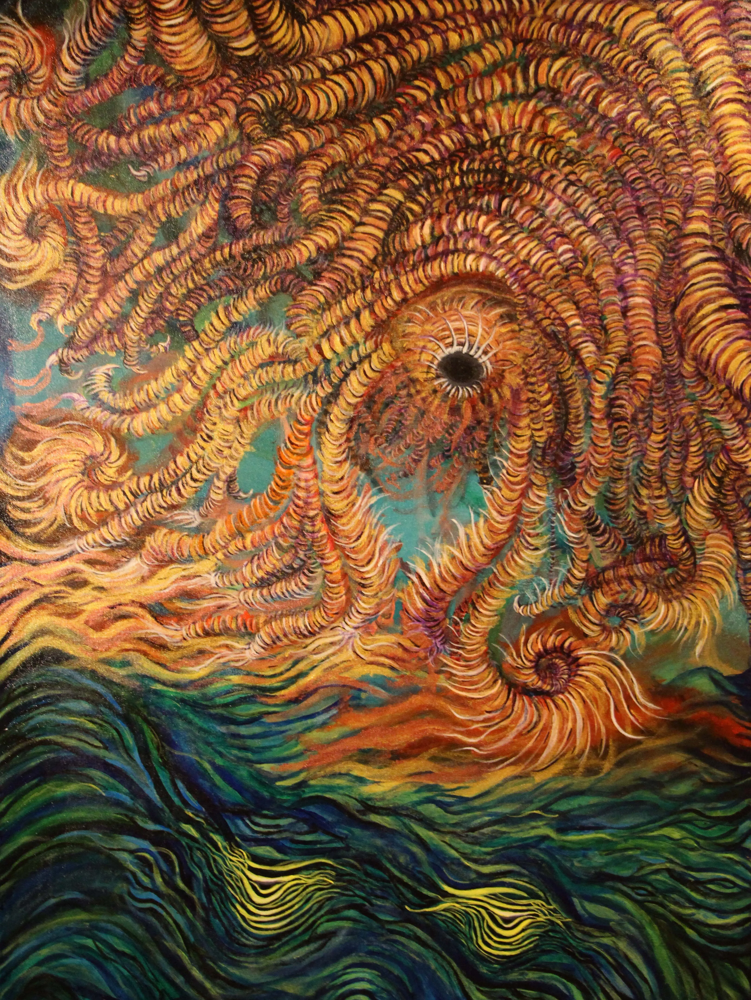
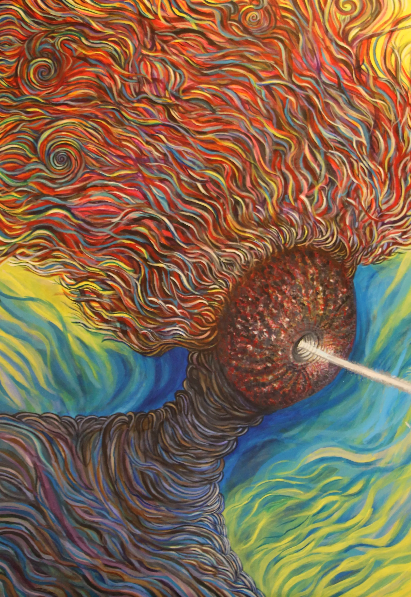

Crestfallen
Acrylic on Canvasキャンバスにアクリル
Size: 30” x 36” x 0.75”サイズ: 30” x 36” x 0.75”
Conceptコンセプト
Crestfallen" is about that feeling when you're completely down—a moment of a deep emotional fall. It shows the inner state of being sucked into a void's mouth. Even so, the piece carries a message that an inner strength will always pull you back up.
「Crestfallen（落胆）」は、完全に落ち込んだ時の感情、つまり深い感情的な落下の瞬間を表現しています。虚無の口に吸い込まれていく内面的な状態を示しています。それでも、この作品には、内なる強さが必ずあなたを引き上げてくれるというメッセージが込められています。
Strife’s End
Acrylic on canvasキャンバスにアクリル
Size: 24" x 36" x 0.75”サイズ: 24" x 36" x 0.75”
Conceptコンセプト
It conveys the liberation of the mind that comeｓ at the end of a lengthy struggle. While everyone sometimes suffers and seems to lose their way, this piece expresses the conviction that "an answer will always be found." Throughout the struggle, a guidepost awaits.
長い闘いの末に訪れる心の解放を伝えています。誰もが時に苦しみ、道を見失うように見えることがありますが、この作品は「必ず答えは見つかる」という信念を表現しています。闘いを通して、道しるべが待っているのです。


Time and Trauma
Acrylic on canvasキャンバスにアクリル
Size: 36” x 48” x 0.75”サイズ: 36” x 48” x 0.75”
Conceptコンセプト
My piece is an expression of the healing process of trauma. It visualizes the inner space where a "trauma hunter" resides. This trauma hunter is a part of me—my inner strength—that actively works to heal old wounds. While the journey to heal takes a long time and the effects of past trauma may always be present, the trauma hunter's presence means that trauma is no longer powerful. Through my work, I want to show that everyone has this strength within themselves, even if they aren't aware of it. This piece is a reminder that healing is a process, and we all possess the power to move forward.
私の作品は、トラウマの治癒過程を表現したものです。「トラウマ・ハンター」が存在する内なる空間を視覚化しています。このトラウマ・ハンターは私の一部であり、古い傷を癒すために積極的に働く私の内なる強さです。癒やしの旅には長い時間がかかり、過去のトラウマの影響は常に存在するかもしれませんが、トラウマ・ハンターの存在は、トラウマがもはや力を持たないことを意味します。この作品を通して、気づいていなくても、誰もが自分の中にこの強さを持っていることを示したいと思っています。この作品は、癒やしは一つの過程であり、私たちは皆、前に進む力を持っているということを思い出させてくれます。
M’eye
Acrylic on canvasキャンバスにアクリル
Size: 40" x 30"x 0.75”サイズ: 40" x 30"x 0.75”
Conceptコンセプト
This piece is a self-portrait, painting my inner world. Due to Retinitis Pigmentosa, I am blind in my right eye and have a narrow field of vision in my left. There was a time when I hated my ugly, disease-affected eyes and resented my limitations. I have now accepted the reality, however, and depict my now beloved eyes as the central theme of this self-portrait.
この作品は私の内なる世界を描いた自画像です。網膜色素変性症のため、私は右目が見えず、左目の視野も狭くなっています。病気に冒された醜い目を憎み、自分の限界を恨んだ時期もありました。しかし、今では現実を受け入れ、愛するようになった目をこの自画像の中心テーマとして描いています。
My vision is severely restricted, but one eye still functions, and my imagination will never fade. The beam of light symbolizes this constricted yet appreciated vision.
視覚は厳しく制限されていますが、片目はまだ機能しており、私の想像力が色褪せることはありません。光の筋は、この制限されつつも感謝している視覚を象徴しています。
This painting embodies a strong will to move forward despite visual impairment. I hope this expression provides courage to others facing similar struggles or any of life’s difficulties.
この絵は、視覚障害にもかかわらず前に進もうとする強い意志を体現しています。この表現が、同じような闘いや人生の困難に直面している他の人々に勇気を与えることを願っています。
